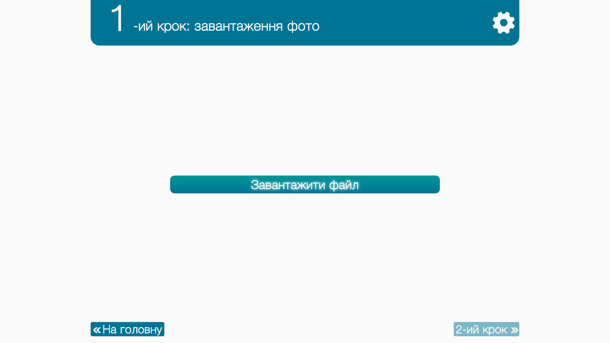
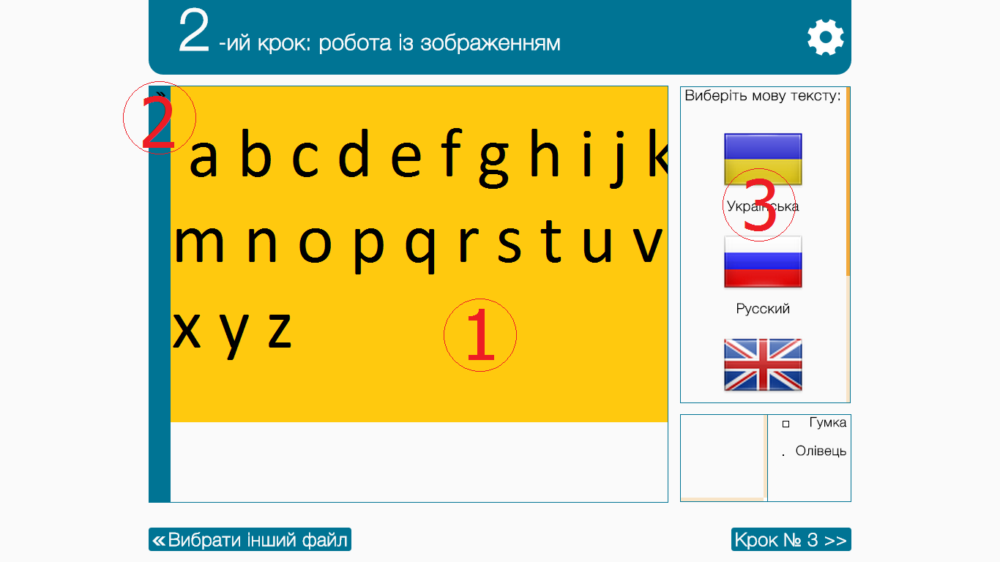
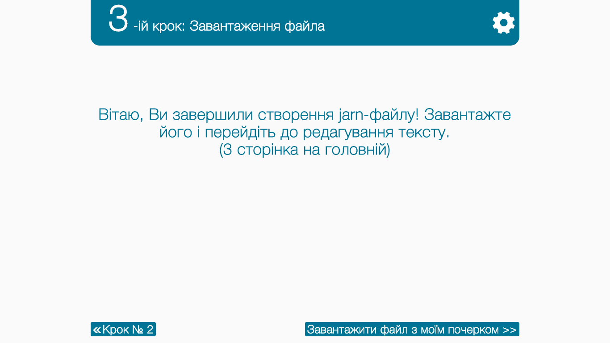
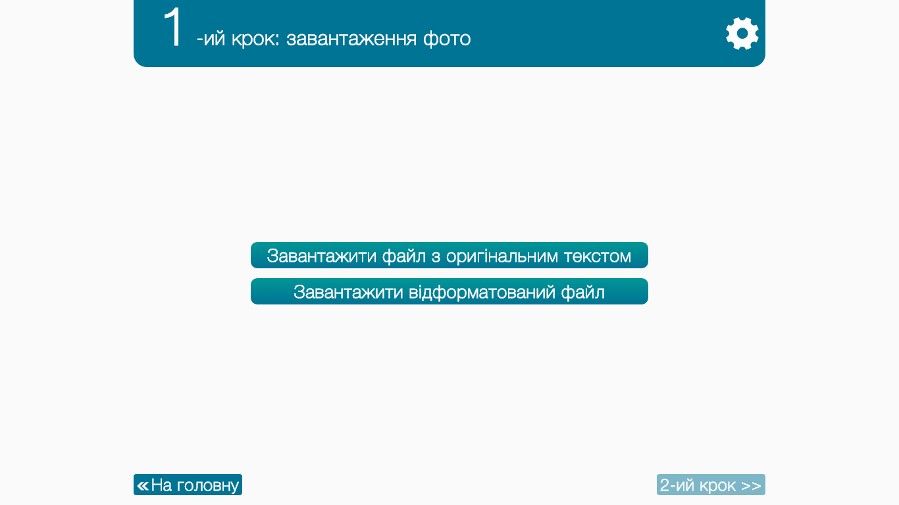
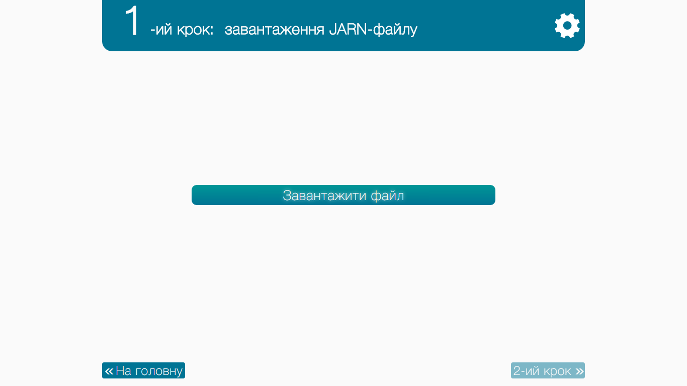
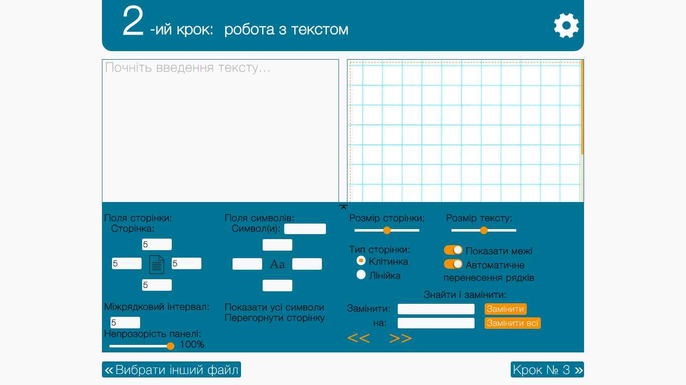
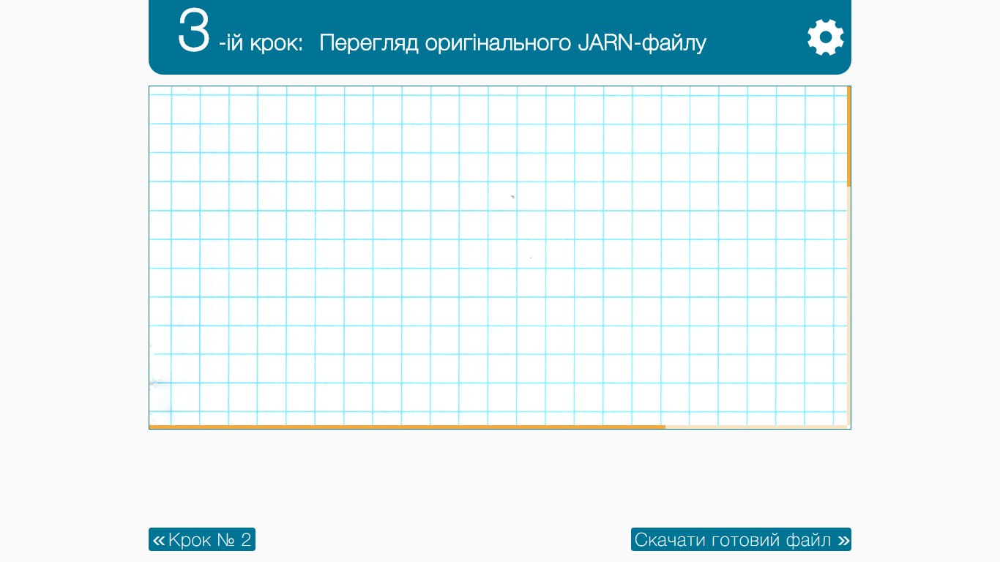

Часті питання про JARN
Що таке JARN?
В 5 словах:
Спрощена система редагування рукописного тексту.
В 110 словах:
JARN - це комплекс програм, які допомогають написати рукописний текст Вашим почерком лише за допомогою клавіатури. Для цього потрібно виконати кілька нескладних, але доволі монотонних дій:
1) Відсканувати аркуш паперу з рукописним текстом (Задля збереження якості фотографувати не рекомендується).
2) Завантажити отримане зображення на сторінку Створити (1 пункт головного меню).
3) З допомогою рамки вибору вказати межі кожного символа із зображення.
4) Зберегти файл з Вашим почерком (JARN-файл) на комп'ютер.
5) За потреби можна редагувати JARN-файл. Ви можете додавати чи видаляти символи на сторінці Редагувати.
6) Завантажити Ваш JARN-файл на сторінку Писати.
7) Задати мінімальне форматування вихідного тексту (міжрядковий інтервал, відступи між символами, тип та розмір сторінки, її межі).
8) Завантажити готовий файл на комп'ютер.
9) Profit!
JARN-файл
Що таке JARN-файл?
JARN-файл — це файл, в якому зберігається Ваш почерк. Створивши його, Ви зможете написати будь-який текст, який JARN напише Вашим почерком. Зробити це можна в редакторі готового тексту (3 сторінка на головній). Створити JARN-файл можна на сторінці Створити.
Принципи формування JARN-файлів:
Jarn-файл являє зображення з пропорціями ~ 1:4. Стандартний розмір: 500*2003px.
Частина зображення розміром 500*2000px призначена для зберігання таблиці з символами, які Ви ввели. Розмір таблиці: 5*20, отже максимальне число символів, які Ви можете використати в одній мові становить 100. Цього достатньо для збереження букв алфавіту в нижньому і верхньому регістрах, цифр, знаків пунктуації.
Інша частина зображення призначена для зберігання службової інформації про кожен символ, колір тексту та його мову. Перші 100*3 px призначені виключно для збереження інформації про кожен символ. Номер пікселя відповідає номеру символа, інформацію про який він зберігає. Так 1-ому пікселю відповідає літера А українського алфавіту, 2-ому — Б, і т. д. Смуга розміром 1*100 px призначена виключно для зберігання розмірів кожного символа. Компонент R кольорового простору RGBA зберігає ширину символа, а компонент G — висоту. Ці параметри задаються при створенні JARN-файлу. Смуга розміром 2*100 px знизу заповнюється при редагуванні готового тексту на сторінці Писати. Вона зберігає відступи між символами. Два пікселі справа призначені для зберігання кольору тексту і його мови відповідно.
Сторінка Створити
Для чого призначена ця сторінка?
Основне призначення сторінки Створити — створення JARN-файлу з Вашим почерком.
1-ий крок: завантаження фото
За допомогою кнопки Вибрати файл необхідно вибрати зображенння відсканованого документа. Лише після його вибору можна буде перейти до 2 кроку.
2-ий крок: робота із зображенням
При переході до цього кроку Ви побачите:
1) Ваше зображення
2) Панель управління
3) Мовну панель
Перш за все потрібно вибрати мову, якою написано текст на зображенні. На вибір дано Українську, Російську, Англійську та Італійську мови. Якщо потрібної вам мови не виявилось в списку Ви можете власноручно створити словник для неї і завантажити його у поле Власний словник. У такому разі необхідно вказати ISO-639 код мови (Наприклад, 'DE' чи 'DEU' для німецької). Цей код порібен програмі для ідентифікації невідомої їй мови в системі. Лише після вказання коду ви зможете завантажити словник. Він повинен являти собою звичайний текстовий файл (*.txt), в якому в стопчик прописано кожен символ мови (не забудьте про пробіл, симоли у ВЕРХНЬОМУ РЕГІСТРІ, знаки пунктуації та цифри). Максимальна кількість символів — 100.
Для того щоб відкрити панель управління достатньо просто навести курсор миші на блакитну смугу зліва. Якщо Ви виведете курсор за межі панелі, вона згорнеться. Якщо це не зручно для Вас, можете натиснути на символ (>>) у верхньому правому куті панелі. Він зміниться на (>|). Це буде означати, що панель закріплена і ви можете продовжувати роботу із зображенням, тримаючи панель відкритою. Натисніть на символ (>|) знову, щоб відкріпити панель.
Налаштування Розмиття кольору призначене для зміни параметрів відкидання зайвих деталей. Якщо програма видалила деякі символи, потягніть повзунок ліворуч, якщо замало — праворуч.
З допомогою налаштування Розмір зображення можна збільшити чи зменшити розмір зображення.
З допомогою налаштування Розмір рамки вибору можна збільшити чи зменшити розмір рамки вибору символів.
З допомогою перемикача Переміщення можна змінити функції мишки над зображенням. Ввімкнувши його, Ви зможете переміщуватись по зображенню. Вимкнувши — повернетесь до звичайного режиму з рамкою вибору.
Налаштування Колір рамки вибору дозволяє змінити колір рамки на власний, якщо стандартний зливається з фоном зображення.
Коли Ви внесете всі необхідні зміни в панель управління, можете почати виділяти символи із зображення.
3-ий крок: завантаження фото
Завантажте Ваш JARN-файл.
Сторінка Редагувати
Для чого призначена ця сторінка?
Основне призначення сторінки Редагувати — редагування JARN-файлу з Вашим почерком.
1-ий крок: завантаження фото
За допомогою кнопки Завантажити файл з оригінальним текстом необхідно вибрати зображенння відсканованого документа. За допомогою кнопки Завантажити відформатований файл виберіть JARN-файл, в який потрібно внести зміни. Лише після його вибору можна буде перейти до 2 кроку.
2-ий крок: робота із зображенням
При переході до цього кроку Ви побачите:
1) Ваше зображення
2) Панель управління
3) Мовну панель
Перш за все потрібно вибрати мову, якою написано текст на зображенні. На вибір дано Українську, Російську, Англійську та Італійську мови. Якщо потрібної вам мови не виявилось в списку ви можете власноручно створити словник для неї і завантажити його у поле Власний словник. В такому разі необхідно вказати ISO-639 код мови (Наприклад, 'DE' чи 'DEU' для німецької). Цей код порібен програмі для ідентифікації невідомої йому мови в системі. Лише після вказання коду ви зможете завантажити словник. Він повинен являти собою звичайний текстовий файл (*.txt), в якому в стопчик прописано кожен символ мови (не забудьте про пробіл, симоли у ВЕРХНЬОМУ РЕГІСТРІ, знаки пунктуації та цифри). Максимальна кількість символів — 100.
Ваш курсор прийме вигляд перехрестя. Воно призначене для вибору кольору тексту. Ним необхідно натиснути на будь-який з символів, присутніх у відсканованому зображенні. Коли ви це зробите, програма відкине зайві деталі зображення (розмітку сторінки клітинками чи лінійками, червоні поля, і т. д.), залишивши лише текст. Якщо ви не задоволені результатом роботи програми Ви можете відкрити панель управління і виправити зображення. Далі необхідно виділити рамкою вибору кожен або більшість символів на зображенні (НЕ ЗАБУВАЙТЕ ПРО ПРОБІЛ).
Для того щоб відкрити панель управління достатньо просто навести курсор миші на блакитну смугу зліва. Якщо Ви виведете курсор за межі панелі вона згорнеться. Якщо це не зручно для Вас, можете натиснути на символ (>>) у верхньому правому куті панелі. Він зміниться на (>|). Це буде означати, що панель закріплена і ви можете продовжувати роботу з зображенням, тримаючи панель відкритою. Натисніть на символ (>|) знову щоб відкріпити панель.
Налаштування Розмиття кольору призначене для зміни параметрів відкидання зайвих деталей. Якщо програма видалила деякі символи потягнть повзунок ліворуч, якщо замало — праворуч.
З допомогою налаштування Розмір зображення можна збільшити чи зменшити розмір зображення.
З допомогою налаштування Розмір рамки вибору можна збільшити чи зменшити розмір рамки вибору символів.
З допомогою перемикача Переміщення можна змінити функції мишки над зображенням. Ввімкнувши його Ви зможете переміщуватись по зображенню. Вимкнувши — повернетесь до звичайного режиму з рамкою вибору.
Налаштування Колір рамки вибору дозволяє змінити колір рамки на власний, якщо стандартний зливається з фоном зображення.
Налаштування Непрозорість панелі дозволяє змінити прозорість панелі.
Коли Ви внесете всі необхідні зміни в панель управління, можете почати виділяти символи з зображення.
3-ий крок: завантаження фото
Завантажте Ваш JARN-файл.
Сторінка Писати
1-ий крок: завантаження jarn-файлу
Ви можете завантажити 1 або більше jarn-файлів. Якщо в одному з них буде виявлено мову, яку системі не вдалось розпізнати Вам буде запропоновано завантажити словник цієї мови.
2-ий крок: робота з текстом
Зліва знаходиться текстове поле, куди потрібно вставити текст, який потрібно написати Вашим почерком. Справа знаходиться вікно попереднього перегляду результату. Будь-які зміни, які ви внесете з панелі управління будуть відразу відображатись у цьому вікні.
З допомогою налаштування Поля сторінки можна налаштувати межі сторінки, на якій буде відображатись текст, написаний Вашим почерком.
З допомогою налаштування Міжрядковий інтервал можна задати значення відступу між рядками у тексті.
З допомогою налаштування Непрозорість панелі можна встановити прозорість панелі управління.
З допомогою налаштування Поля символів можна вказати значення відступів для кожного символа у тексті. В поле Символ(и) введіть один або кілька символів, яким необхідно задати відступи. Можна задавати від'ємні значення відступів.
З допомогою налаштування Показати всі символи можна відобразити список усіх символів у текстове поле, щоб перевірити як вони відображаються. При повторному натисканні на кнопку текст, що знаходився в полі до цього буде відновлено.
Налаштування Перегорнути сторінку змінює орієнтацію сторінки.
Повзунок Розмір сторінки дозволяє задати розмір фону.
Перемикач Тип сторінки призначений для вибору типу фонового зображення.
Повзунок розмір тексту збільшує або зменшує текст у вікні попереднього перегляду.
Перемикач Показати межі визначає наявність або відсутність пунктирної рамки навколо вікна попереднього перегляду, яка вказує на межі зони, в яку буде промальовуватись текст.
Перемикач Автоматичне перенесення рядків визначає поведінку програми у випадку, якщо введений Вами текст виходить за межі сторінки.
Поля Знайти і Замінити призначені для швидкого редактування введеного тексту.
Стрілки Вліво та Вправо дозволяють перегортати сторінки "віртуального журналу". Якщо ви заповнили одну сторінку, скористайтесь кнопкою Вправо, щоб перейти до іншої. Поточну сторінку буде збережено, отже ви зможете до неї повернутись згодом.
На цій сторінці Ви можете переглянути фінальну версію готового файлу і завантажити його.